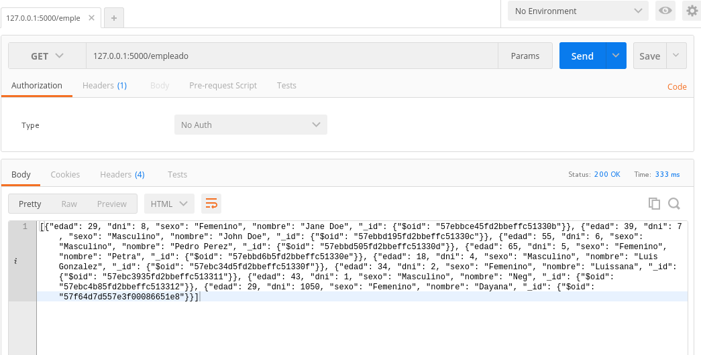
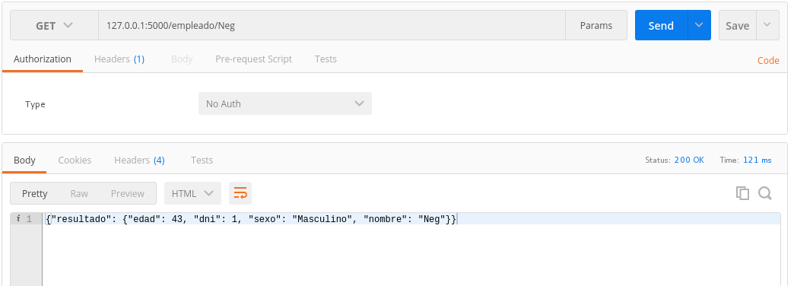
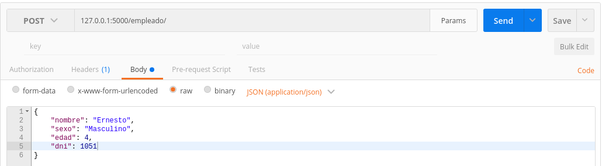
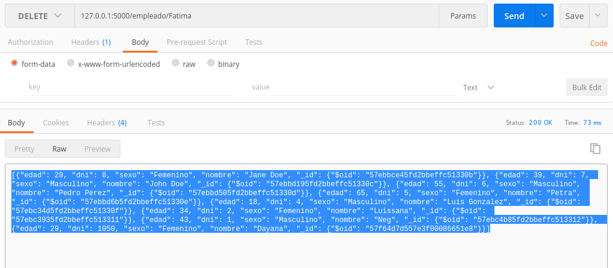
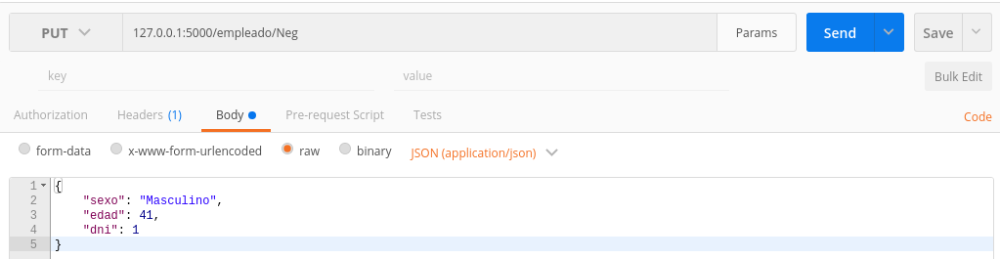

API Rest Ful con Flask y MongoDB (Flask-MongoAlchemy)
Posted on jue 06 octubre 2016 in Tutorial de Python • 6 min read
En artículo anterior se hizo un CRUD para Flask con MongoDB usando Mongo-Alchemy, en dicho artículo se manejaron varios URL para hacer el CRUD.
En este artículo se manejará el REST por medio de los URL y con Flask solamente, en próximos artículos se usará Flask-RESTful y Flask-Restless.
Métodos de HTTP
En este caso se va a estandarizar el CRUD por medio de API Rest Ful, donde se usará el mismo URL con métodos GET, POST, PUT y DELETE.
Los métodos se usarán de la siguiente forma:
- Agregar Empleado: Método POST, URL /empleado, sin parámetros.
- Buscar Empleado: Método GET, URL /empleado, parámetro
- Listar Empleados: Método GET, URL /empleado.
- Editar/Actualizar Empleado: Método PUT, URL /empleado, parámetro
- Borrar Empleado: Método DELETE, URL /empleado, parámetro
Como puede notarse, con un sólo URL se tiene las acciones del CRUD usando los métodos de HTTP, esto permite estándarizar y simplificar el uso de los URL, y principalmente hacer un correcto uso de HTTP:
Para más información sobre el estilo arquitectónico API REST pueden revisar en wikipedia.
Estructura de directorios y archivos Se mantiene la misma estructura de archivos y directorios del artículo sobre CRUD:
tutorial-flask
├── app
│ └── run.py
├── docker-compose.yml
├── Dockerfile
└── README.md
Archivo Dockerfile y docker-compose.yml
El archivo Docker contiene lo siguiente:
FROM python
WORKDIR /code/
RUN pip3 install --upgrade pip
RUN pip3 install pymongo
RUN pip3 install Flask
RUN pip3 install Flask-PyMongo
RUN pip3 install Flask-MongoAlchemy
EXPOSE 5000
ADD ./app/* /code/
COPY ./app/* /code/
CMD python run.py
El archivo docker-compose.yml contiene lo siguiente:
flask-rest1:
build: .
ports:
- "5000:5000"
volumes:
- "./app/:/code"
links:
- mongo
mongo:
image: mongo
ports:
- "27017:27017"
volumes:
- "/srv/data/db:/data/db:rw"
Codigo de la aplicación
El código de run.py se muestra a continuación:
#!/usr/bin/env python
#Se importa Flask, reqest y jsonify
from flask import Flask, request,jsonify
#Se importa MongoAlchemy
from flask_mongoalchemy import MongoAlchemy
#Se importa dumps
from bson.json_util import dumps
#Se instancia la clase de Flask, se configura el acceso
#a la base de datos mongodb a empleados
app = Flask(__name__)
app.config['MONGOALCHEMY_DATABASE'] = 'empleados'
app.config['MONGOALCHEMY_CONNECTION_STRING'] = 'mongodb://mongo:27017/empleados'
#Se instancia mongoalchemy pasando la app.
db = MongoAlchemy(app)
#Se crea la clase empleados la cual manejara los documentos.
class empleados(db.Document):
nombre = db.StringField()
sexo = db.StringField()
edad = db.IntField()
dni = db.IntField()
#Se define la funcion agregar con metodo get
@app.route('/empleado',methods=['POST'])
def agregar():
#Se crea la instancia empleado de la clase empleados donde se
#logra hacer la inserción de un empleado con el metodo save.
nombre = str(request.json['nombre'])
sexo = str(request.json['sexo'])
edad = int(request.json['edad'])
dni = int(request.json['dni'])
empleado = empleados(nombre=nombre,sexo=sexo,edad=edad,dni=dni)
empleado.save()
#Se retorna que el usuario fue agregado.
###
consulta = empleados.query.all()
listado = []
for i in consulta:
listado.append(i.wrap())
return dumps(listado)
#Se crea la funcion buscar con metodo get.
@app.route('/empleado/<string:nombre>',methods=['GET'])
def buscar(nombre):
#Se realiza la busqueda y se devuelve el resultado, si existe un error de atributo (que el empleado no existe)
#Se devuelve empleado no encontrado.
try:
resultado = empleados.query.filter(empleados.nombre == nombre).first()
return dumps({'resultado':{'nombre':resultado.nombre,'sexo':resultado.sexo,'edad':resultado.edad,'dni':resultado.dni}})
except (AttributeError):
return dumps({'resultado': 'Empleado no encontrado'})
@app.route('/empleado',methods=['GET'])
def listar():
#Se realiza la busqueda y se devuelve el resultado, si existe un error de atributo (que el empleado no existe)
#Se devuelve empleado no encontrado.
try:
consulta = empleados.query.all()
resultado = []
for i in consulta:
resultado.append(i.wrap())
return dumps(resultado)
except (AttributeError):
return dumps({'resultado': 'Empleado no encontrado'})
#Se crea la funcion actualizar que tiene metodo put, con
#url /empleado y se le pasa el nombre a buscar
@app.route('/empleado/<string:nombre>',methods=['PUT'])
def actualizar(nombre):
#Se intenta buscar al empleado en la base de datos, si no esta devuelve error
try:
#Se consulta en la base de datos, donde devuelve el primer elemento encontrado
resultado = empleados.query.filter(empleados.nombre == nombre).first()
#Se toma los datos de un json y se guardan en sus variables, salvando luego
#en la base de datos.
resultado.sexo = str(request.json['sexo'])
resulado.edad = int(request.json['edad'])
resultado.dni = int(request.json['dni'])
resultado.save()
#Se realiza la consulta desplegando los empleados
consulta = empleados.query.all()
listado = []
for i in consulta:
listado.append(i.wrap())
#Se devuelve la nueva lista de empleados en un json.
return dumps(listado)
except (AttributeError):
return dumps({'resultado': 'Empleado no encontrado'})
#Borrar un empleado de la base de datos, se pasa el url /empleado con el
#string nombre usando el metodo delete.
@app.route('/empleado/<string:nombre>',methods=['DELETE'])
def borrar(nombre):
#Se busca el empleado, si existe se borra de la base de datos y se devuelve
#mensaje de empleado borrado, si no, se devuelve el mensaje de empleado no
#encontrado.
try:
resultado = empleados.query.filter(empleados.nombre == nombre).first()
resultado.remove()
###
consulta = empleados.query.all()
listado = []
for i in consulta:
listado.append(i.wrap())
return dumps(listado)
except (AttributeError):
return dumps({'resultado':'Empleado no encontrado'})
if __name__ == "__main__":
#Se corre la aplicacion en modo debug
app.run(host="0.0.0.0",debug=True)
Construcción de la imagen y ejecución del contenedor
Construcción de la imagen Docker:
docker-compose build
Ejecución del contenedor:
docker-compose up
Pruebas del API REST FUL
Para este caso se usará POSTMAN, una aplicación para google chrome.
Listar Empleados
Se usa postman colocando 127.0.0.1:5000/empleados con método GET, en la siguiente figura se muestra el listado:

El JSON que devuelve es el siguiente:
[{"edad": 29, "dni": 8, "sexo": "Femenino", "nombre": "Jane Doe", "_id": {"$oid": "57ebbce45fd2bbeffc51330b"}}, {"edad": 39, "dni": 7, "sexo": "Masculino", "nombre": "John Doe", "_id": {"$oid": "57ebbd195fd2bbeffc51330c"}}, {"edad": 55, "dni": 6, "sexo": "Masculino", "nombre": "Pedro Perez", "_id": {"$oid": "57ebbd505fd2bbeffc51330d"}}, {"edad": 65, "dni": 5, "sexo": "Femenino", "nombre": "Petra", "_id": {"$oid": "57ebbd6b5fd2bbeffc51330e"}}, {"edad": 18, "dni": 4, "sexo": "Masculino", "nombre": "Luis Gonzalez", "_id": {"$oid": "57ebc34d5fd2bbeffc51330f"}}, {"edad": 34, "dni": 2, "sexo": "Femenino", "nombre": "Luissana", "_id": {"$oid": "57ebc3935fd2bbeffc513311"}}, {"edad": 43, "dni": 1, "sexo": "Masculino", "nombre": "Neg", "_id": {"$oid": "57ebc4b85fd2bbeffc513312"}}, {"edad": 29, "dni": 1050, "sexo": "Femenino", "nombre": "Dayana", "_id": {"$oid": "57f64d7d557e3f00086651e8"}}]
Buscar un Empleado
En el postman se coloca el siguiente url con método GET 127.0.0.1/empleado/Neg , la siguiente figura muestra el resultado:

EL JSON que devuelve es el siguiente:
{"resultado": {"edad": 43, "dni": 1, "sexo": "Masculino", "nombre": "Neg"}}
Agregar Empleado
En postman se agrega el url con método POST 127.0.0.1:5000/empleado y se pasa en formato JSON lo siguiente:
{
"nombre": "Fatima",
"sexo": "Femenino",
"edad": 24,
"dni": 1052
}
La siguiente figura muestra la captura de la información que se coloca en postman:

Esto devuelve el siguiente JSON:
[{"edad": 29, "dni": 8, "sexo": "Femenino", "nombre": "Jane Doe", "_id": {"$oid": "57ebbce45fd2bbeffc51330b"}}, {"edad": 39, "dni": 7, "sexo": "Masculino", "nombre": "John Doe", "_id": {"$oid": "57ebbd195fd2bbeffc51330c"}}, {"edad": 55, "dni": 6, "sexo": "Masculino", "nombre": "Pedro Perez", "_id": {"$oid": "57ebbd505fd2bbeffc51330d"}}, {"edad": 65, "dni": 5, "sexo": "Femenino", "nombre": "Petra", "_id": {"$oid": "57ebbd6b5fd2bbeffc51330e"}}, {"edad": 18, "dni": 4, "sexo": "Masculino", "nombre": "Luis Gonzalez", "_id": {"$oid": "57ebc34d5fd2bbeffc51330f"}}, {"edad": 34, "dni": 2, "sexo": "Femenino", "nombre": "Luissana", "_id": {"$oid": "57ebc3935fd2bbeffc513311"}}, {"edad": 43, "dni": 1, "sexo": "Masculino", "nombre": "Neg", "_id": {"$oid": "57ebc4b85fd2bbeffc513312"}}, {"edad": 29, "dni": 1050, "sexo": "Femenino", "nombre": "Dayana", "_id": {"$oid": "57f64d7d557e3f00086651e8"}}, {"edad": 24, "dni": 1052, "sexo": "Femenino", "nombre": "Fatima", "_id": {"$oid": "57f68505557e3f000e1aa766"}}]
Como se nota el empleado Fátima aparece en la base de datos al final.
Borrar Empleado
Para este caso se buscará borrar al empleado Fátima, se coloca el siguiente url en postman con método DELETE: 127.0.0.1:5000/empleado/Fatima .
La siguiente imagen muestra la ejecución en postman:

Esto devuelve el siguiente JSON:
[{"edad": 29, "dni": 8, "sexo": "Femenino", "nombre": "Jane Doe", "_id": {"$oid": "57ebbce45fd2bbeffc51330b"}}, {"edad": 39, "dni": 7, "sexo": "Masculino", "nombre": "John Doe", "_id": {"$oid": "57ebbd195fd2bbeffc51330c"}}, {"edad": 55, "dni": 6, "sexo": "Masculino", "nombre": "Pedro Perez", "_id": {"$oid": "57ebbd505fd2bbeffc51330d"}}, {"edad": 65, "dni": 5, "sexo": "Femenino", "nombre": "Petra", "_id": {"$oid": "57ebbd6b5fd2bbeffc51330e"}}, {"edad": 18, "dni": 4, "sexo": "Masculino", "nombre": "Luis Gonzalez", "_id": {"$oid": "57ebc34d5fd2bbeffc51330f"}}, {"edad": 34, "dni": 2, "sexo": "Femenino", "nombre": "Luissana", "_id": {"$oid": "57ebc3935fd2bbeffc513311"}}, {"edad": 43, "dni": 1, "sexo": "Masculino", "nombre": "Neg", "_id": {"$oid": "57ebc4b85fd2bbeffc513312"}}, {"edad": 29, "dni": 1050, "sexo": "Femenino", "nombre": "Dayana", "_id": {"$oid": "57f64d7d557e3f00086651e8"}}]
Modificar empleado
Para este caso se modificará el empleado Neg, cambiando su edad.
Se abre el postman colocando el url 127.0.0.1:5000/empleado/Neg con método PUT. Adicional se agrega el JSON:
{
"sexo": "Masculino",
"edad": 41,
"dni": 1
}
La siguiente imagen muestra el postman:

Esto devuelve el siguiente JSON:
[{"sexo": "Femenino", "_id": {"$oid": "57ebbce45fd2bbeffc51330b"}, "nombre": "Jane Doe", "dni": 8, "edad": 29}, {"sexo": "Masculino", "_id": {"$oid": "57ebbd195fd2bbeffc51330c"}, "nombre": "John Doe", "dni": 7, "edad": 39}, {"sexo": "Masculino", "_id": {"$oid": "57ebbd505fd2bbeffc51330d"}, "nombre": "Pedro Perez", "dni": 6, "edad": 55}, {"sexo": "Femenino", "_id": {"$oid": "57ebbd6b5fd2bbeffc51330e"}, "nombre": "Petra", "dni": 5, "edad": 65}, {"sexo": "Masculino", "_id": {"$oid": "57ebc34d5fd2bbeffc51330f"}, "nombre": "Luis Gonzalez", "dni": 4, "edad": 18}, {"sexo": "Femenino", "_id": {"$oid": "57ebc3935fd2bbeffc513311"}, "nombre": "Luissana", "dni": 2, "edad": 34}, {"sexo": "Masculino", "_id": {"$oid": "57ebc4b85fd2bbeffc513312"}, "nombre": "Neg", "dni": 1, "edad": 41}, {"sexo": "Femenino", "_id": {"$oid": "57f64d7d557e3f00086651e8"}, "nombre": "Dayana", "dni": 1050, "edad": 29}]
Se muestra en subrayado el empleado Neg que cambió su edad en la base de datos.
Para terminar, ahora se muestra la salida del servidor:
flask-rest1_1 | 172.17.0.1 - - [06/Oct/2016 15:59:33] "GET /empleado HTTP/1.1" 200 -
flask-rest1_1 | 172.17.0.1 - - [06/Oct/2016 16:03:48] "GET /empleado/Neg HTTP/1.1" 200 -
flask-rest1_1 | 172.17.0.1 - - [06/Oct/2016 17:08:22] "POST /empleado HTTP/1.1" 200 -
flask-rest1_1 | 172.17.0.1 - - [06/Oct/2016 17:39:24] "DELETE /empleado/Fatima HTTP/1.1" 200 -
flask-rest1_1 | 172.17.0.1 - - [06/Oct/2016 17:47:59] "PUT /empleado/Neg HTTP/1.1" 200 -
Como se ve, la salida devuelve el URL que se usa y los métodos utilizados.
De esta manera se muestra el uso del estilo arquitectónico API REST y el uso de HTTP con sus diferentes métodos.
El código fuente de este artículo se encuentra en el repositorio tutorial-flask de gitlab en la rama mongo-restful.
¡Haz tu donativo! Si te gustó el artículo puedes realizar un donativo con Bitcoin (BTC) usando la billetera digital de tu preferencia a la siguiente dirección: 17MtNybhdkA9GV3UNS6BTwPcuhjXoPrSzV
O Escaneando el código QR desde la billetera: